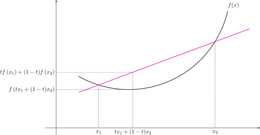

In Short
Expectation–maximization (EM) algorithm is an iterative method for finding maximum likelihood or maximum a posteriori (MAP) estimates of parameters in statistical models, where the model depends on unobserved latent variables.
The EM iteration alternates between performing an expectation (E) step, which creates a function for the expectation of the log-likelihood evaluated using the current estimate for the parameters, and a maximization (M) step, which computes parameters maximizing the expected log-likelihood found on the E step. These parameter-estimates are then used to determine the distribution of the latent variables in the next E step.
More Details
The EM algorithm is used to find (locally) maximum likelihood parameters of a statistical model in cases where the equations cannot be solved directly. Typically these models involve latent variables in addition to unknown parameters and known data observations. That is, either there are missing values among the data, or the model can be formulated more simply by assuming the existence of additional unobserved data points. For example, a mixture model can be described more simply by assuming that each observed data point has a corresponding unobserved data point, or latent variable, specifying the mixture component that each data point belongs to.
Finding a maximum likelihood solution typically requires taking the derivatives of the likelihood function with respect to all the unknown values: the parameters and the latent variables — and simultaneously solving the resulting equations. In statistical models with latent variables, this usually is not possible. Instead, the result is typically a set of interlocking equations in which the solution to the parameters requires the values of the latent variables and vice versa, but substituting one set of equations into the other produces an unsolvable equation.
The EM algorithm proceeds from the observation that the following is a way to solve these two sets of equations numerically. One can simply pick arbitrary values for one of the two sets of unknowns, use them to estimate the second set, then use these new values to find a better estimate of the first set, and then keep alternating between the two until the resulting values both converge to fixed points. It's not obvious that this will work at all, but in fact it can be proven that in this particular context it does, and that the derivative of the likelihood is (arbitrarily close to) zero at that point, which in turn means that the point is either a maximum or a saddle point. In general there may be multiple maxima, and there is no guarantee that the global maximum will be found. Some likelihoods also have singularities in them, i.e. nonsensical maxima. For example, one of the "solutions" that may be found by EM in a mixture model involves setting one of the components to have zero variance and the mean parameter for the same component to be equal to one of the data points.
Convex Sets
If we would like to have a better idea about EM algorithm, we may have to start from the convex definition and then gradually move to Jensen’s inequality which is one of key concepts will be used in EM algorithm.
First definition is convex set.
Definition
A set \(\mathcal{C}\) is convex if, for any \(x,y \in \mathcal{C}\) and \(\theta \in \mathbb{R}\) with \(0 \le \theta \le 1\) \[ \theta x + (1-\theta) y \in \mathcal{C} \] Intuitively, this means that if we take any two elements in \(\mathcal{C}\), and draw a line segment between these two elements, then every point on that line segment also belongs to \(\mathcal{C}\). The point \(\theta x + (1-\theta)y\) is called a convex combination of the points of \(x\) and \(y\).
Examples
All of \(\mathbb{R}^n\). It should be fairly obvious that given any \(x,y \in \mathbb{R}^n\), we have \(\theta x + (1 - \theta) y \in \mathbb{R}^n\).
The non-negative orthant, \(\mathbb{R}^n\). THe non-negative orthant consists of all vectors in \(\mathbb{R}^n\) whose elements are all non-negative: \(R_{+}^n = \{ x: x_i \ge 0 \forall i = 1, \cdots, n \}\). To show that this is a convex set, simply note that given any \(x,y \in \mathbb{R}_{+}^n\) and \(0 \le \theta \le 1\), \[ (\theta x + (1-\theta)y)_i = \theta x_i + (1-\theta)y_i \ge 0 \forall i \]
Norm balls. Let \(\|\cdot\|\) be some norm on \(\mathbb{R}^n\) (e.g., the Euclidean norm, \(\|x\|_2 = \sqrt{\sum x_i^2}\). Then the set \(\{x: \|x\| \le 1\}\) is a convex set. To see this, suppose \(x,y \in \mathbb{R}^n\) with \(\|x\| \le 1\), \(\|y\| \le 1\), and \(0 \le \theta \le 1\). Then \[ \|\theta x + (1 - \theta)y\| \le \|\theta x\| + \|(1-\theta)y\| = \theta \|x\| + (1-\theta)\|y\| \le 1 \] where we used the trangle inequality and the positive homogeneity of norms.
Affine subspaces and polyhedra. Given a matrix \(A \in \mathbb{R}^{m \times n}\) and a vector \(b \in \mathbb{R}^m\), an affine subspace is the set \(\{ x \in \mathbb{R}^n : Ax = b\}\) (note that this could possibly be empty set if \(b\) is not in the range of \(A\). Range of \(A\), denoted \(\mathcal{R}(A)\), is the span of the columns of A) \[ \mathcal{R}(A) = \{ v \in \mathbb{R}^m : v = Ax, \forall x \in \mathbb{R}^n \} \] Similarly, a polyhedron is the set \(\{ x \in \mathbb{R}^n : Ax \preceq b\}\), where \(\preceq\) here denotes componentwise inequality (i.e. all the entries of \(Ax\) are less than or equal to their corresponding element in b). To prove this, first consider \(x,y \in \mathbb{R}^n\) such that \(Ax = Ay = b\). Then for \(0 \le \theta \le 1\), \[ A(\theta x + (1-\theta)y) = \theta Ax + (1- \theta)Ay = \theta b + (1- \theta)b = b \] Similarly, for \(x,y \in \mathbb{R}^n\) that satisfy \(Ax \le b\) and \(Ay \le b\) and \(0 \le \theta \le 1\), \[ A(\theta x + (1-\theta)y) = \theta Ax + (1- \theta)Ay \le \theta b + (1- \theta)b = b \]
Intersections of convex sets. Suppose \(C_1, C_2, \cdots, C_k\) are convex sets. Then their intersection \[ \bigcap_{i=1}^k C_i = \{ x: x \in C_i \forall i = 1, \cdot, k \} \] is also a convex set. To see this, consider \(x, y \in \bigcap_{i=1}^k C_i\) and \(0 \le \theta \le 1\). Then \[ \theta x + (1-\theta)y \in C_i \forall i = 1, \cdots, k \] by the definition of a convex set. Therefore \[ \theta x + (1 - \theta)y \in \bigcap_{i=1}^k C_i \]
Convex Functions
Definition
A function \(f: \mathbb{R}^n \to \mathbb{R}\) is convex function if its domain (denoted \(\mathcal{D}(f)\)) is a convex set, and if, for all \(x,y \in \mathcal(D)(f)\) and \(0 \le \theta \le 1\), \[ f(\theta x + (1-\theta)y) \le \theta f(x) + (1-\theta)f(y) \] Intuitively, the way to think about this definition is that if we pick any two points on the graph of a convex function and draw a straight line between them, then the portion of the function between these two points will lie below this straight line. As pictured in the figure below.

We say a function is strictly convex if the definition holds with strict inequality for \(x \ne y\) and \(0 \le \theta \le 1\). We say that \(f\) is concave if \(-f\) is convex, and likewise that \(f\) is strictly concave if \(-f\) is strictly convex.
First Order Condition
Suppose a function \(f: \mathbb{R}^n \to \mathbb{R}\) is differentiable (i.e. the gradient \(\nabla_x f(x)\) exists at all points \(x\) in the domain of \(f\)). Then \(f\) is convex if and only if \(\mathcal{D}(f)\) is a convex set and for all \(x,y \in \mathcal{D}(f)\), \[ f(y) \ge f(x) + \nabla_x f(x)^T(y-x) \] The function \(f(x) + \nabla_x f(x)^T(y-x)\) is called the first-order approximation to the function \(f\) at the point \(y\). The first order condition for convexity says that \(f\) is convex if and only if the tangent line is a global underestimator of the function \(f\). In other words, if we take our function and draw a tangent line at any point, then every point on this line will lie below the corresponding point on \(f\).
Second Order Condition
Suppose a function \(f: \mathbb{R}^n \to \mathbb{R}\) is twice differentiable (i.e. the Hessian \(\nabla_x^2 f(x)\) is defined for all points \(x\) in the domain of \(f\)). Then \(f\) is convex if and only if \(\mathcal{D}(f)\) is a convex set and its Hessian is positive semidefinite: i.e. for any \(x \in \mathcal{D}(f)\), \[ \nabla_x^2 f(x) \ge 0 \]
Jensen's Inequality
Jensen's Inequality is the most important concepts in the EM algorithm.
Suppose we start with the inequality in the basic definition of a convex function \[ f(\theta x + (1- \theta)y) \le \theta f(x) + (1 - \theta)f(y) \] Using induction, this can be fairly easily extended to convex combinations of more than one point, \[ f \left( \sum_{i=1}^k \theta_ix_i \right) \le \sum_{i=1}^k \theta_i f(x_i) \;\; \text{for} \sum_{i=1}^k \theta_i = 1, \theta_i \ge 0 \] In fact, this can also be extended to infinite sums or integrals. In the latter case, the inequality can be written as \[ f \left(\int p(x)x\; \mathrm{d}x \right) \le \int p(x)f(x)\; \mathrm{d}x \;\; \text{for} \int p(x)\; \mathrm{d}x = 1, p(x) \ge 1 \] Because \(p(x)\) integrates to 1, it is common to consider it as a probability density, in which case the previous equation can be written in terms of expectations, \[ f(\mathbf{E}[x]) \le \mathbf{E}[f(x)] \] This clast inequality is known as Jensen's inequality, and it can be shown in the figure below.
Moreover, if \(f\) is strictly convex, then \(f(E[x]) = E[f(x)]\) holds true if and only if \(x=E[x]\) with probability 1 (if \(x\) is a constant)
Sublevel Sets
Convex functions give rise to a particularly important type of convex set called an \(\alpha\)-sublevel set. Given a convex function \(f: \mathbb{R}^n \to \mathbb{R}\) and a real number \(\alpha \in \mathbb{R}\), the \(\alpha\)-sublevel set is defined as \[ \{ x \in \mathcal{D}(f) : f(x) \le \alpha \} \] In other words, the \(\alpha\)-sublevel set is the set of all points \(x\) such that \(f(x) \le \alpha\).
To show that this is a convex set, consider any \(x,y \in \mathcal{D}(f)\) such that \(f(x) \le \alpha\) and \(f(y) \le \alpha\). Then \[ f(\theta x + (1-\theta)y) \le \theta f(x) + (1-\theta)f(y) \le \theta \alpha + (1-\theta)\alpha = \alpha \] We will meet the sublevel set again in SVM, which we can see sublevel set play an important role in the convex optimization problem.
Examples
Exponential. Let \(f : \mathbb{R} \to \mathbb{R}\), \(f(x) = \exp(ax)\) for any \(a \in \mathbb{R}\). To show \(f\) is convex, we can simply take the second derivative \(f''(x) = a^2 \exp(ax)\), which is positive for all \(x\).
Negative logarithm. Let \(f : \mathbb{R} \to \mathbb{R}\), \(f(x) = - \log x\) with domain \(\mathcal{D}(f) = \mathbb{R}_{++}\) (here \(\mathbb{R}_{++}\) denotes the set of stricly positive real numbers, \(\{ x : x > 0 \}\), which is a convex set). Then \(f''(x) = 1/x^2 > 0\) for all \(x\).
Affine functions. Let \(f : \mathbb{R}^n \to \mathbb{R}\), \(f(x) = b^Tx + c\) for some \(b \in \mathbb{R}^n. c \in \mathbb{R}\). In this case the Hessian, \(\nabla_x^2 f(x) = 0\) for all \(x\). Because the zero matrix is both positive semidefinite and negative semidefinite, \(f\) is both convex and concave. In fact, affine functions of this form are the only functions that are both convex and concave.
Quadratic functions. Let \(f : \mathbb{R}^n \to \mathbb{R}\), \(f(x) = \frac{1}{2} x^TAx + b^Tx + c\) for a symmetric matrix \(A \in \mathbb{S}^n\), \(b \in \mathbb{R}^n\). It is fairly easy to show the Hessian for this function is given by \[ \nabla_x^2 f(x) = A \] Therefore, the convexity or non-convexity of \(f\) is determined entirely by whether or not \(A\) is positive semidefinite: if \(A\) is positive semidefinite then the function is convex (and analogously for strictly convex, concave, strictly concave); if \(A\) is indefinite then \(f\) is neither convex nor concave. Note that the squared Euclidean norm \(f(x) = \|x\|_2^2 = x^Tx\) is a special case of quadratic functions where \(A=I\), \(b=0\), \(c=0\), so it is therefore a strictly convex function.
Norms. Let \(f : \mathbb{R}^n \to \mathbb{R}\) be some norm on \(\mathbb{R}^n\). There by the triangle inequality and positive homogeneity of norms, for \(x,y \in \mathbb{R}^n\), \(0 \le \theta \le 1\), \[ f(\theta x + (1- \theta)y) \le f(\theta x) + f((1-\theta)y) = \theta f(x) + (1-\theta)f(y) \] This is an example of a convex function where it is not possible to prove convexity based on the second-order or first-order conditions because norms are not generally differentiable everywhere.
Nonnegative weighted sumes of convex functions. Let \(f_1, f_2, \cdots, f_k\) be convex functions and \(\omega_1, \omega_2, \cdots, \omega_k\) be nonnegative real numbers. Then \[ f(x) = \sum_{i=1}^k \omega_i f_i(x) \] is a convex function since \[ \begin{aligned} f(\theta x + (1-\theta) y) & = \sum_{i=1}^k \omega_i f_i(\theta x + (1-\theta)y) \\ & \le \sum_{i=1}^k \omega_i(\theta f_i(x) + (1 - \theta)f_i(y)) \\ & = \theta \sum_{i=1}^k \omega_i f_i(x) + (1-\theta) \sum_{i=1}^k \omega_i f_i(y) \\ & = \theta f(x) + (1-\theta) f(y) \end{aligned} \]
Convex Optimization Problems
Armed with the definitions of convex functions and sets, we are now equipped to consider convex optimization problems. Formally, a convex optimization problem in an optimization problem of the form \[ \begin{aligned} \text{minimize} & f(x) \\ \text{subject to} & x \in \mathcal{C} \end{aligned} \] where \(f\) is a convex function, \(\mathcal{C}\) is a convex set, and \(x\) is the optimization variable. However since this can be little bit vague, we often wrtie it as \[ \begin{aligned} \text{minimize } & f(x) \\ \text{subject to } & g_i(x) \le 0, i = 1, \cdots, m \\ & h_i(x) = 0, i = 1, \cdots, p \end{aligned} \] where \(f\) is a convex function, \(g_i\) are convex functions, and \(h_i\) are affine functions, and \(x\) is the optimization variable.
Is it important to note the direction of these inequalities: a convex function \(g_i\) must be less than zero. This is because the 0-sublevel set of \(g_i\) is a convex set, so the feasible region, which is the intersection of many convex sets, is also convex. If we were to require that \(g_i \ge\) for some convex \(g_i\), the feasible region would no longer be a convex set, and the algorithms we apply for solving these problems would no longer be guaranteed to find the global optimum. Also notice that only affine functions are allowed to be equality constraints. Intuitively, you can think of this as being due to the fact that an equality constraints is equivalent to the two inequalities \(h_i \le 0\) and \(h_i \ge 0\). However, these will both be valid constraints if and only if \(h_i\) is both convex and concave, i.e. \(h_i\) must be affine.
The optimal value of an optimization problem is denoted \(p^*\) and is equal to the minimum possible value of the objective function in the feasible region \[ p^* = \min \{ f(x) : g_i(x) \le 0, h_i(x) = 0 \} \] We allow \(p^*\) to take on the values \(+ \infty\) and \(- \infty\) when the problem is either infeasible (the feasible region is empty) or unbounded below (there exists feasible points such that \(f(x) \to - \infty\)), respectively. We say that \(x^*\) is an optimal point if \(f(x^*) = p*\). Note that there can be more than one optimal point, even when the optimal value is finite.
Global Optimality
Before stating the result of global optimality in convex problems, ley us formally define the concepts of local optima and global optima. Intuitively, a feasible point is called locally optimal if there are no nearby feasible points that have a lower objective value. Similarly, a feasible point is called globally optimal if there are no feasible points a t all that have a lower objective value. To formalize this a little bit more, we give the following two definitations.
Definition A point \(x\) is locally optimal if it is feasible (i.e. it satisfies the constraints of the optimization problem) and if there exists some \(R > 0\) such that all feasible points \(z\) with \(\|x - z\|_2 \le R\), satisfy \(f(x) \le f(z)\)
Definition A point \(x\) is globally optimal if it is feasible and for all feasible points \(z\), \(f(x) \le f(z)\)
We now come to the crucial element of convex optimization problems, from which they derive most of their utility. The key idea is that for a convex optimization problem all locally optimal points are globally optimal.
Let us give a quick proof of this property by contradiction. Suppose that \(x\) is a locally optimal point which is not globally optimal, i.e. there exists a feasible point \(y\) such that \(f(x) > f(y)\). By the definition of local optimality, there exist no feasible points \(z\) such that \(\|x - z\|_2 \le R\) and \(f(z) < f(x)\). But now suppose we choose the point \[ z = \theta y + (1-\theta)x \text{ with } \theta = \frac{R}{2\|x - y\|_2} \] Then \[ \begin{aligned} \| x - z\|_2 & = \Bigg \| x - \left( \frac{R}{2\|x-y\|_2} y + \left( 1 - \frac{R}{2\|x - y\|_2} \right) x \right) \Bigg \|_2 \\ & = \Bigg \| \frac{R}{2\|x-y\|_2} (x-y) \Bigg \|_2 \\ & = R/2 \le R \end{aligned} \] In addition, by the convexity of \(f\) we have \[ f(z) = f(\theta y + (1 - \theta) y) \le \theta f(y) + (1-\theta) f(x) < f(x) \] Furthermore, since the feasible set is a convex set, and since \(x\) and \(y\) are both feasible \(z = \theta y + (1-\theta)x\) will be feasible as well. Therefore \(z\) is a feasible point, with \(\|x -z\|_2 < R\) and \(f(z) < f(x)\). Our assumption says we have a locally and non-globally optimal, however now we find a \(z\) which is feasible and close enough to \(x\) such that \(f(z) < f(x)\), which is saying \(x\) cannot be locally optimal. So \(x\) should be globally optimal.
Special Cases of Convex Problems
Linear Programming.
We say that a convex optimization problem is a linear program (LP) if both the objective function \(f\) and inequality constraints \(g_i\) are affine functions. In other words, these problems have the form \[ \begin{aligned} \text{minimize } & c^Tx + d \\ \text{subject to } & Gx \preceq h \\ & Ax = b \end{aligned} \] where \(x \in \mathbb{R}^n\) is the optimization variable, \(c \in \mathbb{R}^n\), \(d \in \mathbb{R}\), \(G \in \mathbb{R}^{m \times n}\), \(h \in \mathbb{R}^m\), \(A \in \mathbb{R}^{p \times n}\), \(b \in \mathbb{R}^p\) are defined by the problem, and '\(\preceq\)' denotes elementwise inequality. Here \(Gx-h \preceq 0\) is just the matrix presentation of \(g_i(x) \le 0, \; i = 1, \cdots, ,m\) in the original definition of optimization problems. Same for \(Ax-b = 0\).Quadratic Programming.
We say that a convex optimization problem is a quadratic program (QP) if the inequality constraints \(g_i\) are still all affine, but if the objective function \(f\) is a convex quadratic function. In other words, these problems have the form, \[ \begin{aligned} \text{minimize } & \frac{1}{2} x^TPx + c^Tx + d \\ \text{subject to } & Gx \preceq h \\ & Ax = b \end{aligned} \] where again \(x \in \mathbb{R}^n\) is the optimization variable, \(c \in \mathbb{R}^n\), \(d \in \mathbb{R}\), \(G \in \mathbb{R}^{m \times n}\), \(h \in \mathbb{R}^m\), \(A \in \mathbb{R}^{p \times n}\), \(b \in \mathbb{R}^p\) are defined by the problem, but we also have \(P\) a symmetric positive semidefinite matrix.Quadratically Constrained Quadratic Programming.
We say that convex optimization problem is a quadratically constrained quadratic program (QCQP) if both the objective \(f\) and the inequality constraints \(g_i\) are convex quadratic functions \[ \begin{aligned} \text{minimize } & \frac{1}{2} x^TPx + c^Tx + d \\ \text{subject to } & \frac{1}{2} x^TQ_ix + r_i^Tx + s_i \le 0, \; i = 1, \cdots, m \\ & Ax = b \end{aligned} \] where,as before, \(x \in \mathbb{R}^n\) is the optimization variable, \(c \in \mathbb{R}^n\), \(d \in \mathbb{R}\), \(A \in \mathbb{R}^{p \times n}\), \(b\in \mathbb{R}^p\), \(P\) is positive semidefinite, but we also have \(Q_i\) is also positive semidefinite, \(r_i \in \mathbb{R}^n\), \(s)i \in \mathbb{R}\), for \(i = 1, \cdots, m\)
It should be obvious from the definitions that quadratic programs are more general than linear programs (since a linear program is just a special case of a quadratic program where \(P = 0\)), and likewise that quadratically constrained quadratically constrained quadratic programs are more general than quadratic programs.
Preliminary
Overall the EM algorithm is first find the lower bound of the log-likelihood function, then maximize the lower bound function with respect to the parameter \(\theta\).
In the E-step we will use one theorem we found in previous session, called Jensen's inequality. Recall that if \(f\) is a convex function, and \(X\) is a random variable, then we have \[ E[f(X)] \ge f(E(X)) \]
Now suppose we have an estimation problem in which we have a training dataset \(\{x_1, \cdots, x_N \}\) consisting of \(N\) independent examples. We wish to fit the parameters of a model \(f(x|\theta)\) to the data, where the likelihood is given by \[ \ell (\theta) = \sum_{i=1}^N \log f(x_i | \theta) \] Then if we have a latent random variable, \(z\), most of time is a catigorical variable. For a given \(x_i\), the value space of this latent variable can be different, we denote the possible space as \(z_i\). \[ \begin{aligned} \ell (\theta) & = \sum_{i=1}^N \log f(x_i | \theta) \\ & = \sum_{i=1}^N \log \sum_{z_i} f(x_i, z_i | \theta) \end{aligned} \] But explicitly finding the maximum likelihood estimates of the parameters \(\theta\) may be hard since laten random variables often were not observed.
In such a setting, the EM algorithm gives an efficient method for maximum likelihood estimation. Maximizing \(\ell(\theta)\) explicitly might be difficult, and our strategy will be to instead repeatedly construct a lower-bound on \(\ell\) (E-step), and then optimize that lower-bound (M-step)
E-step
For each \(i\), let \(g_i\) be some distribution over the \(z_i\) (\(\sum_{z \in z_i} g_i(z) = 1\), \(g_i(z) \ge 0\)). Consider the following \[ \begin{aligned} \sum_{i=1}^N \log f(x_i|\theta) & = \sum_{i=1}^N \log \sum_{z \in z_i} f(x_i, z | \theta) \\ & = \sum_{i=1}^N \log \sum_{z \in z_i} g_i(z) \cdot \frac{f(x_i,z|\theta)}{g_i(z)} \\ & = \sum_{i=1}^N \log \left(E_z \left[\frac{f(x_i, z|\theta)}{g_i(z)} \right] \right) \\ & \ge \sum_{i=1}^N E_z \left[ \log \frac{f(x_i, z|\theta)}{g_i(z)} \right] \\ & = \sum_{i=1}^N \sum_{z \in z_i} g_i(z) \cdot \log \frac{f(x_i,z|\theta)}{g_i(z)} \end{aligned} \] The inequality of this derivation used Jensen's inequality. Specifically, \(f(x) = \log x\) is a convcave function, since \(f''(x) = -1/x^2 <0\) over its domain \(x \in \mathbb{R}^+\). So we have \[ \log E(x) \ge E(\log x) \] Also the "\(E_z\)" subscripts above indicate that the expectations are with respect to \(z\) drawn from \(g_i\).
Now for any set of distributions \(g_i\), we always have a lower-bound on \(\ell(\theta)\). There are many possible choices for the \(g_i\). Which should we choose? Well, if we have some current guess \(\theta\) of the parameters, it seems natural to try to make the lower-bound tight at that value of \(\theta\). We will make the inequality above hold with equality at our particular value of \(\theta\).
To make the bound tight for a particular value of \(\theta\), we need for the step involving Jensen's inequality in our derivation above to hold with equality. For this to be true, we know it is sufficient that the expectation be taken over a "constant"-valued random variable, because if \(x\) is constant, \(f(x)\) is constant as well, and \(E(x) = x\), so \(f(E(x)) = f(x) = E(f(x))\). We require that \[ \frac{f(x_i, z | \theta)}{g_i(z)} = \mathcal{C} \] for some constant \(\mathcal{C}\) that does not depend on \(z\). This is easily accomplished by choosing \[ g_i(z) \propto f(x_i, x | \theta) \] Actually, since we know \(\sum_{z \in z_i} g_i(z) = 1\), this further tells us that \[ \begin{aligned} g_i(z) = \frac{f(x_i, z | \theta)}{\mathcal{C}} \iff & \sum_{z \in z_i} \frac{f(x_i, z | \theta)}{\mathcal{C}} = 1 \iff \mathcal{C} = \sum_{z \in z_i} f(x_i, z | \theta) \end{aligned} \] So \[ \begin{aligned} g_i(z) & = \frac{f(x_i, z | \theta)}{\sum_{z \in z_i} f(x_i, z | \theta)} \\ & = \frac{f(x_i, z | \theta)}{f(x_i | \theta)} \\ & = f(z| x_i, \theta) \end{aligned} \] Thus, we simply set the \(g_i\) to be the posterior distribution of the \(z_i\) given \(x_i\) and the setting of the parameter \(\theta\).
M-step
Now, for the \(g_i\) we chose in the E-step, we can get the lower bound for the log-likelihood function \(\ell\). In the M- step, we then maximize our lower bound with respect to the parameters to obtain a new setting of \(\theta\). Repeatedly carrying out these two steps gives us the EM algorithm, which is as follows: \[ \begin{aligned} &\text{Repeat until convergence} \\ &\;\;\; \text{E-step: For each $i$, set} \\ &\;\;\; \;\;\; g_i(z) := f(z|x_i, \theta) \\ &\;\;\; \text{M-step: Set} \\ &\;\;\; \;\;\; \theta := \arg \max_{\theta} \sum_{i=1}^N \sum_{z \in z_i} g_i(z) \cdot \log \frac{f(x_i, z| \theta)}{g_i(z)} \end{aligned} \] The maximization with respect to \(\theta\) can be done using appropriate optimization method, like setting derivative to be zero and solve the equation, or considering iteration method if derivative cannot be solved easily.
Coordinate Ascent
If we define \[ J(g, \theta) = \sum_{i=1}^N \sum_{z_{ij}=1}^{z_i} g_i(z_{ij}) \log \frac{f(x_i, z_{ij} | \theta)}{g_i(z_{ij})} \] then we know \(\ell(\theta) \ge J(g, \theta)\) from our previous derivation.
Let's assume we can obtain the lower bound for the log likelihood function. Then the EM can also be viewed as a coordinate ascent on \(J\). In the E-step, we are trying to maximize the objective with respect to \(g\). Here \(g\) is a function vector that is \(g = (g_1(z_{11}), \cdots, g_1(z_{1}), g_2(z_{21}), \cdots, g_N(z_{N}))\). However, there is a restriction for \(g\) which is for given \(i\), \(\sum_{z_{ij}=1}^{z_i} g_i(z_{ij}) = 1\). So our objective of optimization is \[ \begin{aligned} & J(g, \lambda) = g' \cdot \log \frac{f(x,z| \theta)}{g} + \lambda(\mathbb{1}' \cdot g - 1) \\ \iff & \frac{\partial J(g, \lambda)}{\partial g} = g' \cdot \frac{g}{f(x, z)} \cdot \left( - \frac{f(x,z)}{g^2} \right) + \log \frac{f(x,z| \theta)}{g} + \lambda \cdot 1' = 0 \\ \iff & \frac{\partial J(g, \lambda)}{\partial g} = -1 + \log \frac{f(x,z| \theta)}{g} + \lambda \cdot 1' = 0 \\ \iff & \log f(x,z|\theta) - \log g + (\lambda - 1) \cdot 1' = 0 \\ \iff & g = \frac{f(x,z|\theta)}{\exp(1-\lambda)} \end{aligned} \] Then we solve the \(\lambda\) by using the constraint of \(g\). Let us set \(c = \exp(1 - \lambda)\), so we have \[ \begin{aligned} & \sum_{z_{ij}=1}^{z_i} g_i = \sum_{z_{ij} = 1}^{z_i} \frac{f(x_i, z_{ij}| \theta)}{\exp(1-\lambda)} = 1 \\ \iff & \exp(1-\lambda) = \sum_{z_{ij} = 1}^{z_i} f(x_i, z_{ij}| \theta) = f(x_i | \theta) \\ \iff & g_i(z) = \frac{f(x_i,z|\theta)}{f(x_i|\theta)} = f(z|x_i, \theta) \end{aligned} \] Then in the M-step, we plug in the \(\hat g\) into objective \(J(\hat g, \theta)\), and maximize it with respect to \(\theta\): \[ \hat \theta = \arg \min J(\hat g, \theta) = \arg \min \sum_{i=1}^N \sum_{z_{ij} =1}^{z_i} f(z_{ij} | x_i, \theta) \log \frac{f(x_i, z_{ij} | \theta)}{f(z_{ij}|x_i, \theta)} \] In summary, in each iteration, we just maximize the function of objective \(J(g, \theta)\) in two directions correspondingly.
Convergence
How we know if this algorithm will converge? Well, suppose \(\theta^t\) and \(\theta^{t+1}\) are the parameters from two successive iterations of EM. We will now prove that \(\ell(\theta^t) \le \ell(\theta^{t+1})\), which shows EM always monotonically improves the log-likelihood. The key to showing this result lies in our choice of the \(g_i\)'s. Sepcifically, on the iteration of EM in which the parameters had started out as \(\theta^t\), we would have chosen \(g_i^t(z) := f(z|x_i, \theta)\). We saw earlier that this choce ensures that Jensen's inequality holds with equality, and hence \[ \ell(\theta^t) = \sum_{i=1}^N \sum_{z \in z_i} g_i^t(z) \log \frac{f(x_i, z|\theta^t)}{g_i^t(z)} \] The parameters \(\theta^{t+1}\) are then obtained by maximizing the right hand side of the equation above. Thus \[ \begin{aligned} \ell(\theta^{t+1}) & \ge \sum_{i=1}^N \sum_{z \in z_i} g_i^t(z) \log \frac{f(x_i, z|\theta^{t+1})}{g_i^t(z)} \\ & \ge \sum_{i=1}^N \sum_{z \in z_i} g_i^t(z) \log \frac{f(x_i, z | \theta^t)}{g_i^t} \\ & = \ell(\theta^t) \end{aligned} \] Let us go through the above equations with more details. First, once we know \(\theta^t\), then \(g_i^t\) is known constant. The first inequality comes from the fact that \[ \ell(\theta) \ge \sum_{i=1}^N \sum_{z \in z_i} g_i(z) \log \frac{f(x_i,z | \theta)}{g_i(z)} \] holds for any choice of \(g_i\) and value of \(\theta\), and in particular holds for \(g_i = g_i^t\), \(\theta = \theta^{t+1}\). (ps. if we have \(g_i^{t+1}\), then the equality will be held). The second inequality comes from the fact that \(\theta^{t+1}\) is chosen explicitly to be \[ \arg \max_{\theta} \sum_{i=1}^N \sum_{z \in z_i} g_i(z) \log \frac{f(x_i, z |\theta)}{g_i(z)} \] and thus this formula evaluated at \(\theta^{t+1}\) must be equal to or larger than the same formula evaluated at \(\theta^t\). Finally, the step used to get the last equality follows from \(g_i^t\) having been chosen to make Jensen's inequality hold with equality at \(\theta^t\)
Hence, EM causes the likelihood to converge monotonically.